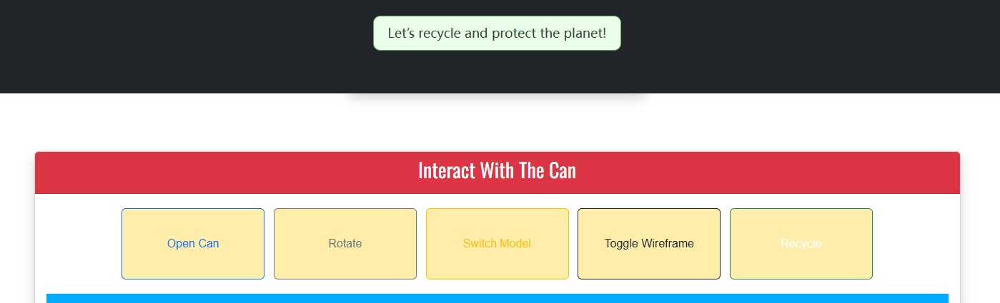

I created a 3D interactive web experience for showcasing three Coca-Cola products: Coke, Sprite, and Dr Pepper. Each drink features its own unique 3D can model, opening and crushing animations, and matching sound effects. I also added a recycling button to encourage sustainability through fun visual and audio feedback.
3D models
I designed three separate 3D models in Blender: a can of Coke, a can of Sprite, and a can of Dr Pepper.
Each can includes two states: open (with an animation of the tab being pulled) and crushed.
The animations were exported in .glb format and integrated with Three.js.
Design
I used Bootstrap to create a simple layout with a top navigation bar, and I applied custom CSS styles to make each page look a bit different. For example, I gave each drink page its own background color to match the brand, and used Google Fonts like Open Sans and Oswald to make the text look more stylish.
I also used CSS to make the images responsive and added rounded borders using img-thumbnail and img-fluid. This helps everything look good on both desktop and mobile.
On top of that, I added small visual effects using JavaScript and CSS – like when you click the Recycle button, the background turns green for a moment and a message pops up to encourage recycling.
Integration
I edited audio from the internet in Adobe Audition so that it played in sync with the animations when they loaded and played in my web page.
I have added images into my landing page and using CSS the image resizes as the screen size resizes.
Interaction
I used Bootstrap to create a simple layout with a top navigation bar, and I applied custom CSS styles to make each page look a bit different. For example, I gave each drink page its own background color to match the brand, and used Google Fonts like Open Sans and Oswald to make the text look more stylish.
I also used CSS to make the images responsive and added rounded borders using img-thumbnail and img-fluid. This helps everything look good on both desktop and mobile.
On top of that, I added small visual effects using JavaScript and CSS – like when you click the Recycle button, the background turns green for a moment and a message pops up to encourage recycling.

Implementation
WebGL 3D Rendering with Three.js: load GLB models, set up scene, camera, lights, and animations (open/crash), plus OrbitControls for intuitive interaction.
Live Debug & Tweaks via dat.GUI: expose light parameters (color, angle, distance, movement) for on-the-fly adjustments.
Responsive UI with Bootstrap 5 and Font Awesome: modern layout, styled buttons for “Open”, “Rotate”, “Switch Model”, “Wireframe” and “Recycle,” plus audio feedback for a polished user experience.
Deeper Understanding
This 3D web app is built on Three.js for all scene, camera, light and WebGL rendering, with GLTFLoader to import and animate .glb models and OrbitControls to let users orbit, pan, and zoom the view. We use dat.GUI for a live tweak panel (lighting, materials, etc.), Bootstrap and Font Awesome for responsive layout and icons, and the Web Audio API (via Three.AudioListener & AudioLoader) to play sound effects. All interactions—opening, rotating, switching, wireframe toggles and recycle prompts—are wired up through standard JavaScript event listeners, and you can optionally layer in custom GLSL shaders for extra visual flair.
Implementation and Publication
I’ve created a dedicated “About” page to explain the features and design of the 3D application.
The entire site has been packaged into a ZIP archive; I confirmed that, when unzipped, it opens and runs flawlessly in Visual Studio Code.